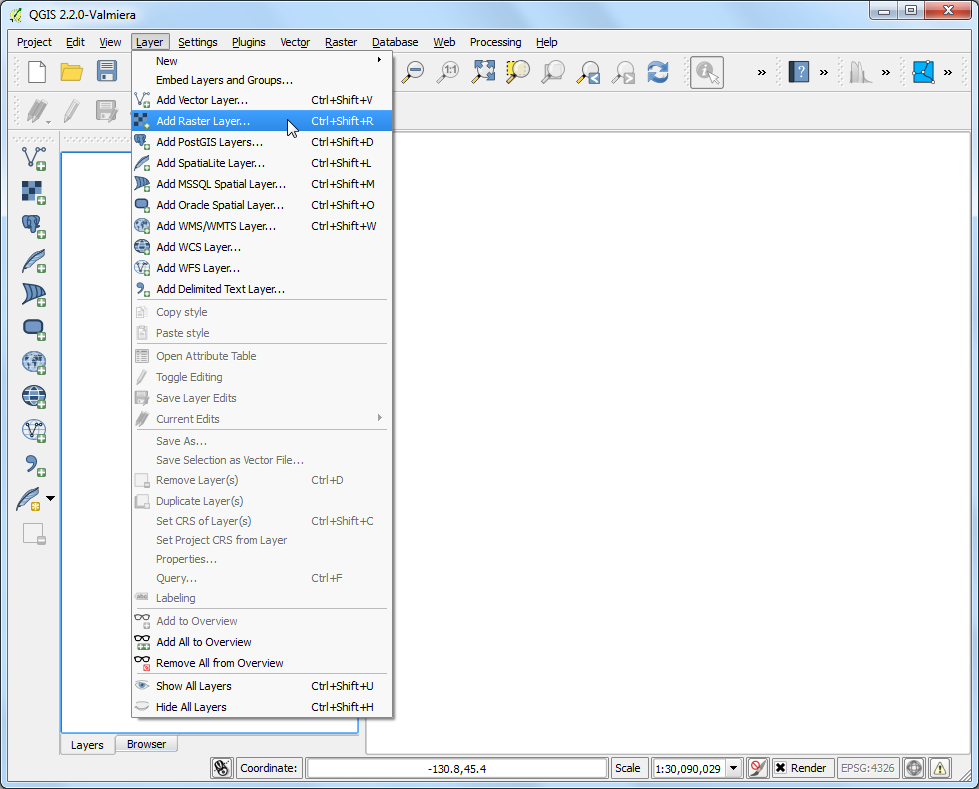
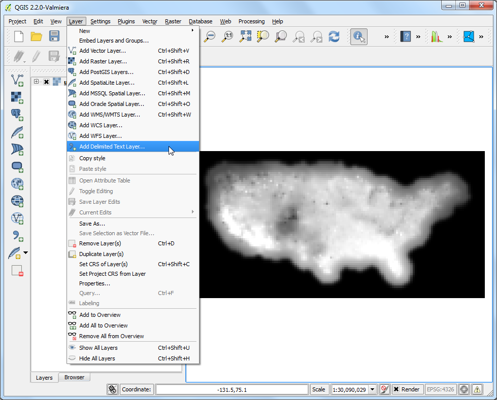
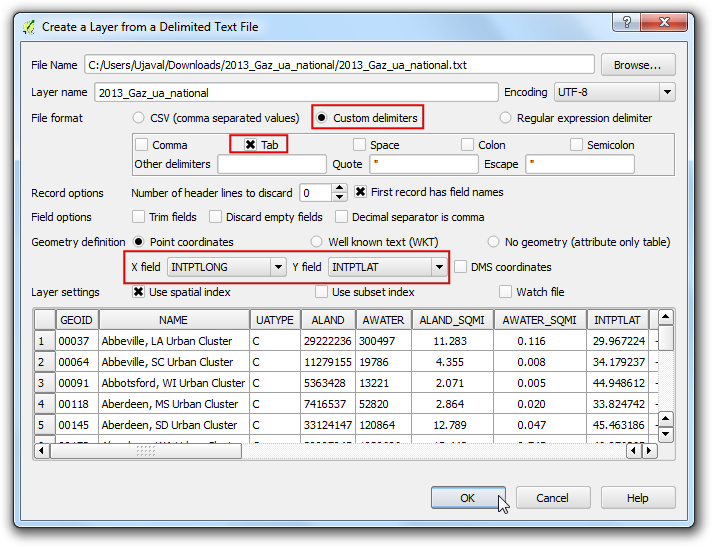
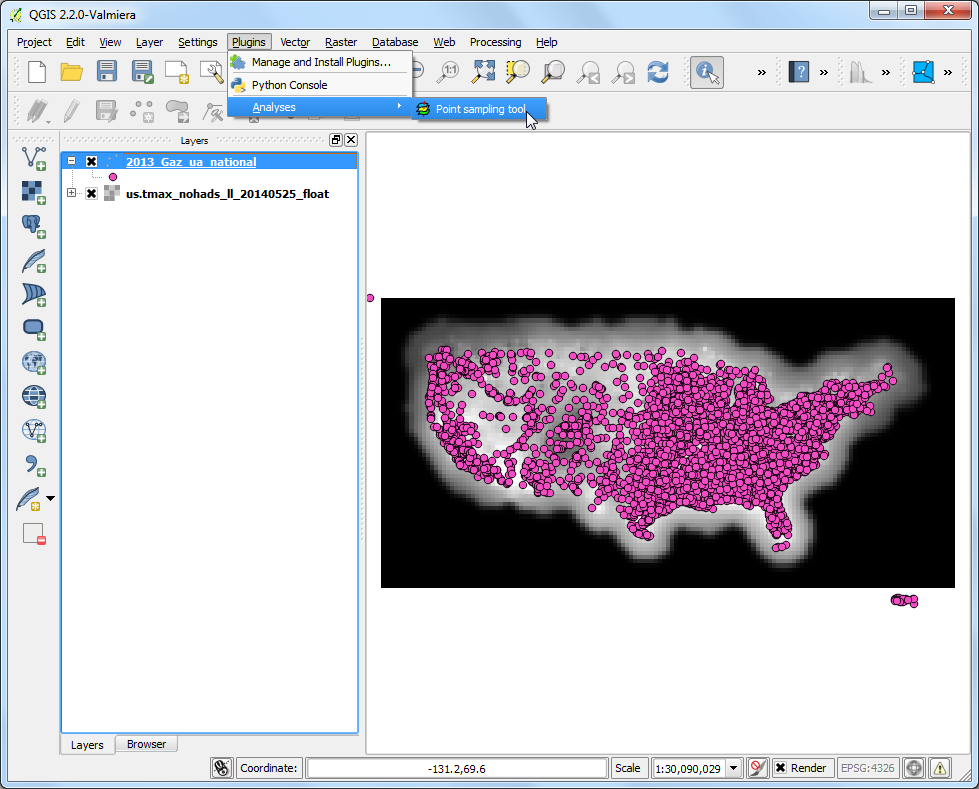
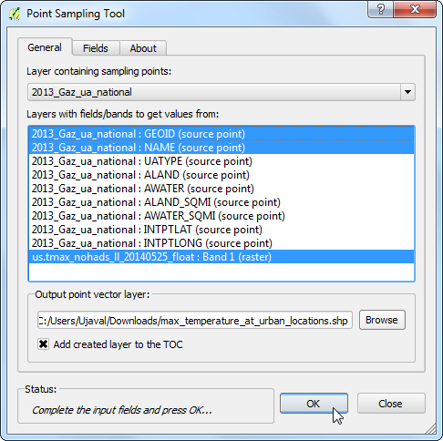
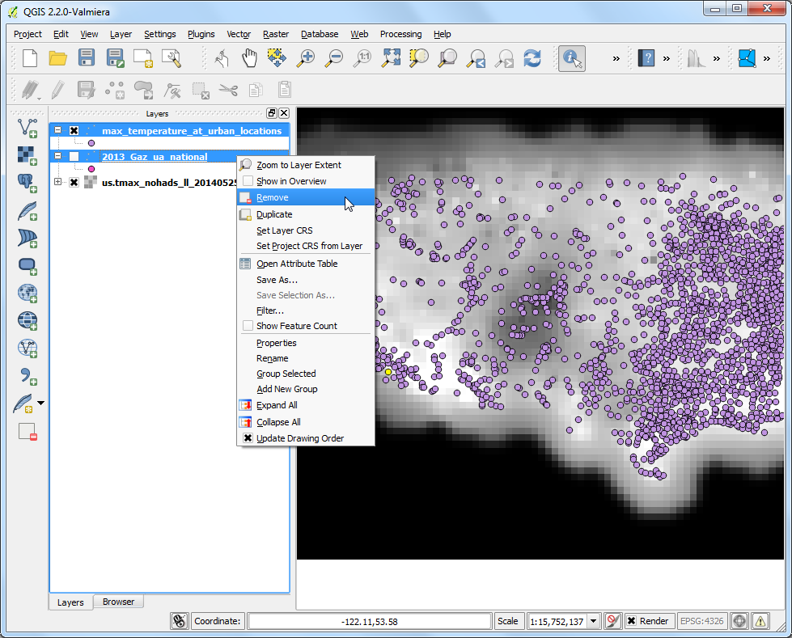
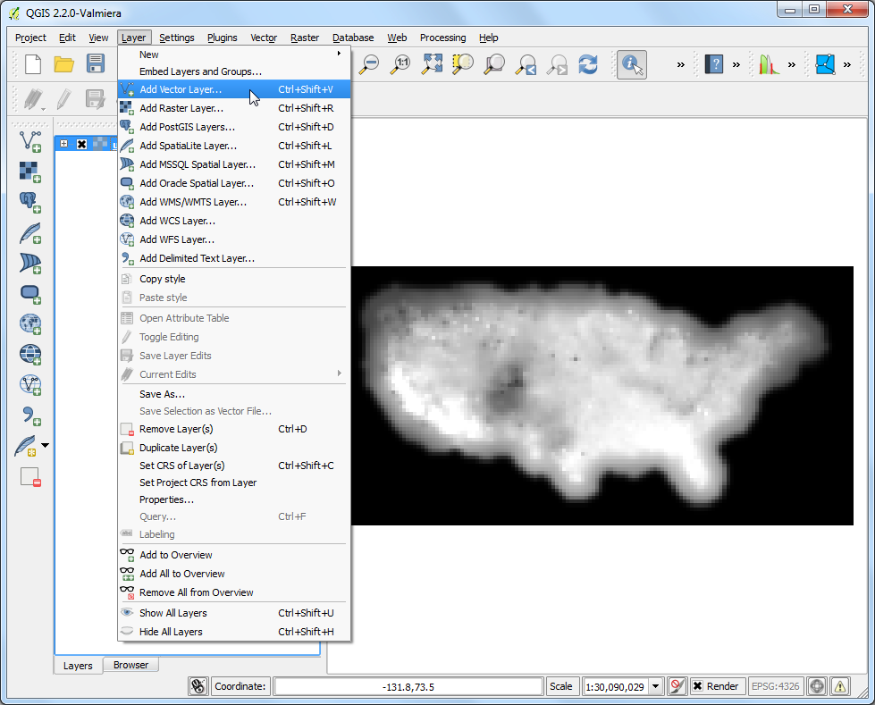
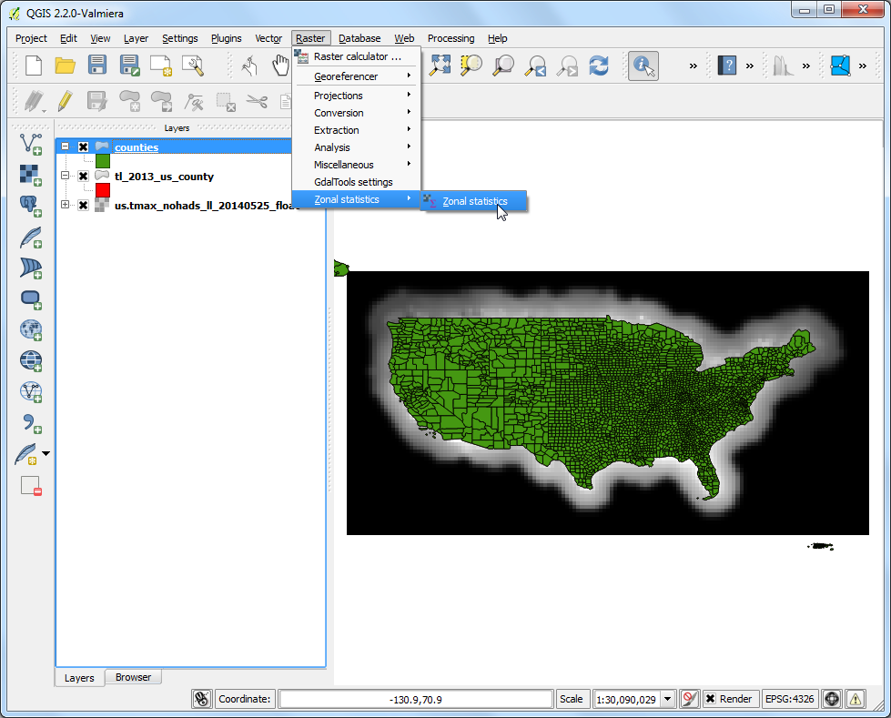

使用點或多邊形對影像資料取樣
許多科學與環境的資料庫使用的是網格狀的影像資料，高程資料 (DEM) 同樣的也是以影像檔的方式發行。這些影像檔中，要呈現的資料數值就是影像中每個像素的像素值。有些時候，我們會需要找出在特定地點的像素值，或是把某個區域的所有像素一同囊括以進行後續分析。這些功能在 QGIS 中可以透過兩個附加元件來達成，分別是 Point Sampling Tool 和 Zonal Statistics plugin。
內容說明
使用美國的「當日最高溫」資料網格影像，找出所有美國都市區的當日最高溫度，以及美國境內所有縣的平均當日最高溫。
你還會學到這些
重投影向量圖層
在 QGIS 圖層列表中選擇且移除多個圖層
操作流程
選擇 ，選擇剛才下載的 us.tmax_nohads_ll_{YYYYMMDD}_float.tif ，然後按 開啟。

圖層載入後，選擇 識別圖徵 工具然後點選圖層的任一處。你可以在「波段 1」中看到該點的攝氏溫度值。

接著把剛下載的 2013_Gaz_ua_national.zip 檔案解壓縮，產生 2013_Gaz_ua_national.txt。選擇 。

在 從分隔文件建立一個圖層 視窗中，點選 瀏覽 然後開啟 2013_Gaz_ua_national.txt。選擇 自訂分隔符號 中的 定位鍵，由於典座標以經緯度編排，因此 X座標 選擇 INTPTLONG，Y座標 選擇 INTPTLAT。勾選 使用空間索引，然後按下 確定。

現在我們已做好從影像圖層中取樣的準備。請安裝 Point Sampling Tool 附加元件，安裝細節請參考 使用附加元件。

選擇 ，開啟附加元件視窗。

在 Point Sampling Tool 視窗中，Layer containing sampling points 要選擇 2013_Gaz_ua_national，而且我們必須要明確的指定所有會從輸入圖層轉存到輸出圖層的欄位值，因此請從 2013_Gaz_ua_national 圖層中選擇 GEOID 和 NAME 兩欄位。我們可以一次從許多影像波段中取樣，不過因為我們目前使用的影像只有 1 個波段，所以選擇 us.tmax_nohads_ll_{YYYYMMDD}_float: Band 1 即可。把輸出向量圖層命名為 max_temparature_at_urban_locations.shp 後按下 確定，程式就會開始執行，當執行結束後，再按下 關閉。

新的圖層 max_temparature_at_urban_locations 會被載入到 QGIS 中。使用 識別圖徵 工具，在任何一點上按一下，就可以瀏覽其屬性。你會看到有個稱為 us.tmax_no 的屬性，這就是在此點位置的影像像素值。

我們分析的第一部分已經完成，現在來移除一些不需要的圖層。按住 Shift 鍵然後選擇 max_temparature_at_urban_locations 和 2013_Gaz_ua_national 圖層，以右鍵點選 移除，就可把它們從 QGIS 的圖層列表中移除。

選擇 ，選擇剛才下載的 tl_2013_us_county.zip ，然後按 開啟，選擇 tl_2013_us_county.shp 圖層然後按下 確定。

tl_2013_us_county 會加入到 QGIS 中。本圖層使用的投影法是 EPSG:4269 NAD83 ，與影像的投影法不相符，所以我們必須先把新圖層重投影到 EPSG:4326 WGS84 才行。

在 tl_2013_us_county 圖層上按右鍵然後選擇 存檔為...，

在 儲存向量圖層為... 的視窗中，按下 瀏覽然後把新檔案命名為 counties.shp。點選 選取CRS 鈕，然後選擇 WGS 84 作為 CRS，勾選 加入儲存檔案至地圖中，最後按下 確定。

名稱為 counties 的新圖層會加入 QGIS 中。

啟用 區域統計附加元件（Zonal Statistics Plugins）。由於它屬於核心附加元件，所以 QGIS 已經安裝就緒了。有關於如何啟用核心附加元件，請參考 使用附加元件。

選擇 。

影像圖層 的欄位選擇 us.tmax_nohads_ll_{YYYYMMDD}_float，包含此區域的多邊形圖層 選擇 counties，輸出的欄位前綴 輸入 ZX_，然後按下 確定。

依照你的資料大小而定，分析可能需要一點時間。

處理結束後，選擇 counties 圖層，使用 識別圖徵 工具點一下任一個縣市的多邊形圖徵，你可以圖層中出現了新的屬性：ZS_count、ZS_mean，和 ZS_sum。這三個屬性分別為影像像素的總數、像素值的平均，以及像素值的總和。由於我們要求的是平均溫度，ZS_mean 欄位就是我們所需要的。

讓我們來調整一下圖層樣式，建立一張溫度分布地圖。在 counties 圖層上按右鍵選擇 屬性。

切換至 樣式 分業，選擇 漸層 樣式然後 行 選擇 ZS_mean。選擇一個你喜歡的 色彩映射表 與 模式，然後按下 分類以建立類別，最後按下 :guilabel:`確定。(樣式設定的細節，請參考 基本向量資料樣式設定。)

最後你會看到縣市界的多邊形地圖現在已依照從影像網格中取出的平均最高氣溫數值設定好樣式了。